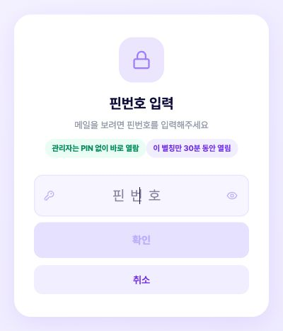
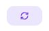
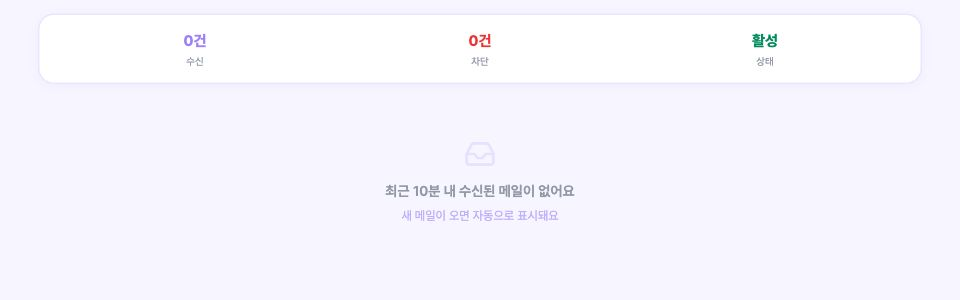

1:1 채팅으로 받은 이메일 링크와 6자리 이메일 PIN을 준비하세요.

왼쪽 화면이 나타나면이메일 확인 페이지에정상적으로 접속한 것입니다.
채팅에서 받은 6자리를 입력한 뒤「확인」을 눌러주세요.

넷플릭스에서 인증을 요청하면 이 메일함에 새 메일이 표시됩니다.아래는 실제 메일이 없는 상태의 화면입니다. 메일이 도착하면 가장 최근 메일을 열어주세요.

숫자 코드가 나오면 넷플릭스 화면에 입력하세요.인증 링크가 나오면 해당 링크를 눌러 완료하세요.